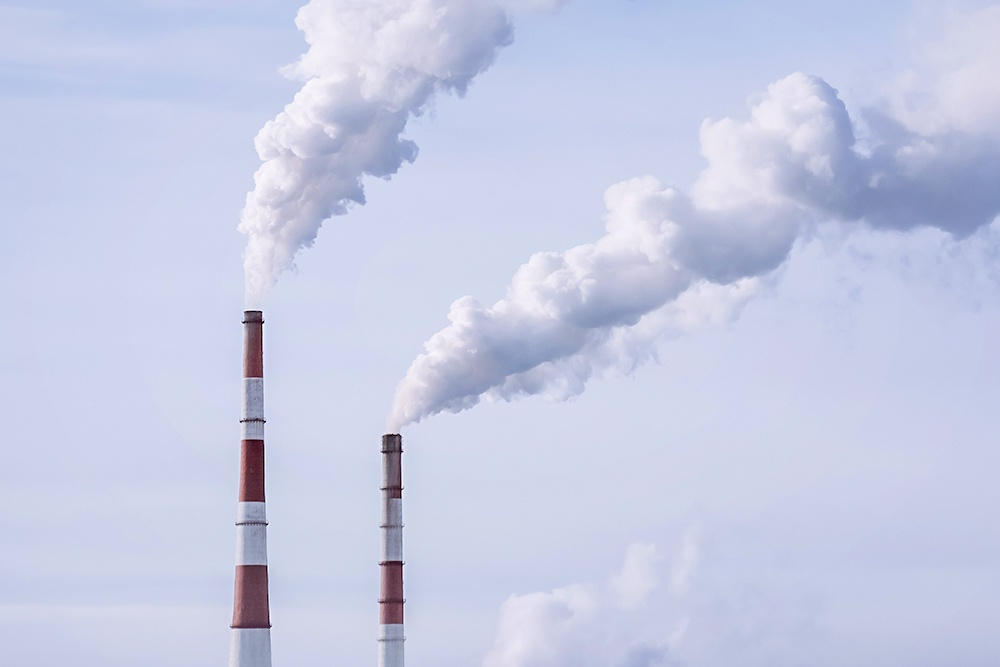
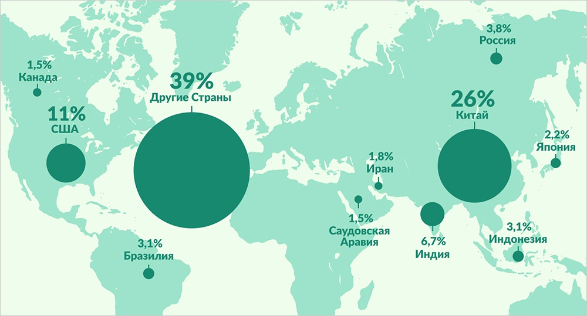
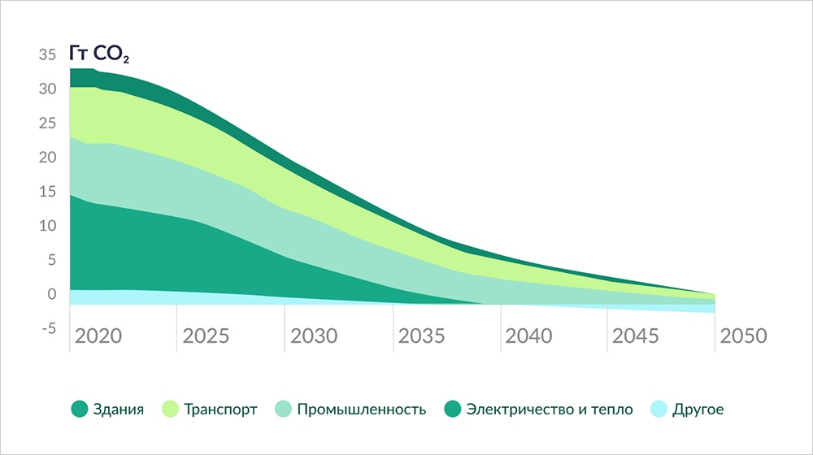

Что такое глобальное потепление?
Глоба́льное потепле́ние — долгосрочное повышение средней температуры климатической системы Земли, происходящее уже более века, основной причиной чего, по мнению подавляющего большинства учёных, является человеческая деятельность (антропогенный фактор). Начиная с 1850 года, в десятилетнем масштабе температура воздуха в каждое десятилетие была выше, чем в любое предшествующее десятилетие. С 1750—1800 годов человек ответственен за повышение средней глобальной температуры на 0.8 — 1.2 °C. Вероятная величина дальнейшего роста температуры на протяжении XXI века на основе климатических моделей составляет 0.3 — 1.7 °C для минимального сценария эмиссии парниковых газов, 2.6 — 4.8 °C — для сценария максимальной эмиссии. Последствия глобального потепления включают повышение уровня моря, региональные изменения осадков, более частые экстремальные погодные явления, такие как жара и расширение пустынь. Как указывается на сайте ООН, существуют тревожные свидетельства того, что превышение пороговых показателей, ведущее к необратимым изменениям в экосистемах и климатической системе нашей планеты, уже произошло.
Причины глобального потепления
Парниковые газы были и до промышленности. Это извержения вулканов, лесные пожары и даже дыхание живых организмов, то есть это нормальный процесс. С другой стороны - сейчас воздействие промышленности настолько велико, что процесс пошел быстрее в десятки раз.
Причины роста выбросов:
- 1. Сжигание угля, нефти и газа
- 2. Вырубка лесов
- 3. Увеличение животноводства
- 4. Выбросы закиси азота удобрениями
- 5. Выделение фторированных газов оборудованием и продуктами
Согласно Carbon Majors, 100 компаний были ответственны за 71% выхлопов с 1988 года по 2015 год, сообщает The Guardian. И это еще раз подтверждает, что все-таки большую часть работы по экологизации должны проводить власти и бизнес.
Последствия глобального потепления
С 1980-х годов каждое десятилетие было теплее предыдущего. Вообще ученые говорят, что повышение температуры планеты до 2 градусов приведет к катастрофе: будут проблемы с сельским хозяйством, умрет ряд животных, в общем, затронет потепление всей экосистемы. В разных частях планеты обострятся погодные аномалии, которые также отразятся на жизни людей. Ученые ожидают, что в некоторых частях света будет меньше дождей, а в другой их станет больше, в третьей части осадков будет столько же, но будут они более сильными и кратковременными. Такие аномалии будут вызывать засуху и наводнения. Сейчас же от проблем страдают бедные страны. По данным ООН, в последние десять лет (2010-2019 годы) из-за погодных явлений и их последствий вынужденный переезд совершают в среднем около 23,1 млн человек в год. Также повысился риск оказаться в нищете для еще большего числа людей. Беженцы прибывают из стран, наименее готовых адаптироваться к последствиям изменения климата. И вот с чем, по мнению ООН, рано или поздно из-за глобального потепления столкнутся все:
- 1. Угроза сельскому хозяйству в тропиках и субтропиках (где растут цитрусовые и имбирь);
- 2. Продолжится сокращение воды, а качество имеющейся будет ухудшаться в регионах, где население зависит от дождевой воды;
- 3. Увеличится смертность от малярии, лихорадки денге и других болезней в тропических и субтропических регионах;
- 4. Таяние ледников и, соответственно, подъем уровня моря, что приведет к затоплению прибрежных районов;
- 5. Леса окажутся под угрозой.
Объем выхлопов по странам (% от общих парниковых газов)
Как это коснется конкретно меня?
По опросам Колумбийской климатической школы при Колумбийском университете, только 24% респондентов считают, что изменение климата окажет большое влияние на их жизнь. А зря, потепление повлияет почти на каждого. Как? Читайте ниже.
- 1. Дом может пострадать от потопа или лесного пожара. По последним данным Рослесхоза, в России не осталось регионов, где нет риска возникновения лесного пожара. Страхование жилья подорожает.
- 2. Работа на свежем воздухе станет невыносимой. От этого пострадают строители, моряки, пожарные и сельскохозяйственные рабочие.
- 3. Из-за повышения температуры людям придется больше использовать кондиционеры и вентиляторы, счета за электроэнергию будут расти.
- 4. Сезон цветения будет дольше, что может привести к увеличению числа приступов аллергии и астмы. С повышением температуры все больше людей будут страдать от тепловых судорог, теплового истощения, гипертермии (высокой температуры тела) и теплового удара. Директор Центра исследований климатических систем института Земли Майкл Пума отметил, что три четверти наших культур полагаются на насекомых для опыления, при этом 41% видов насекомых находится под угрозой исчезновения.
- 5. Интенсивные штормы и сильные осадки могут привести к загрязнению водных ресурсов, в том числе источников питьевой воды.
- 6. По мере повышения температуры некоторые самолеты могут не выдержать жару. В 2015 году ученые рассчитали, что экстремальная жара может ограничить взлетный вес самолетов. Авиакомпании могут быть вынуждены высаживать пассажиров или оставлять багаж. В том числе из-за этого междугородние рейсы на Ближнем Востоке отправляются ночью.
Борьба с глобальным потеплением:
Что делают в мире
О глобальном потеплении достаточно активно говорят с 1975 года, когда экологи начали отмечать изменения средней температуры. Первый документ, регулирующий работу стран по климату, был принят в 1992 году - это Рамочная конвенция ООН об изменении климата, в 1997 году в дополнение был принят Киотский протокол, призывающий сократить или стабилизировать парниковые выбросы. В 2015 году около 200 стран подписали Парижское соглашение по климату. Главные цели документа:
- 1. Не допустить увеличения средней температуры на планете более, чем на 2°С от доиндустриального уровня к 2100 году;
- 2. Сделать все возможное для удержания глобального потепления в пределах 1,5°С.
План по достижению нулевых выбросов углекислого газа в энергетике к 2050 году:
С 2021 года планируется :
Прекратить развитие новых источников добычи угля, газа, нефти; Увеличить ежегодный ввод новых возобновляемых источников энергии.
С 2030 года:
Строить новые здания и сооружения без углеродного выхлопа; Увеличить доступность электроэнергии и сократить использование угольных станций; Продавать до 60% электромобилей.
С 2035 года:
Довести долю продаваемых электрических грузовиков до 50%; Обеспечить максимальный класс энергоэффективности всех промышленных электрических двигателей и систем охлаждения.
C 2040 года:
Достичь нулевых выбросов от производства электроэнергии; Потреблять только 50% нефти от уровня 2020 года; Довести до 50% долю топлива в авиации с низким уровнем выбросов.
К 2050 году:
Вырабатывать более 90% мировой электроэнергии на возобновляемых источниках энергии, из них более 70% - на основе ветра и солнца; Не выбрасывать парниковых газов вообще должно более 90% тяжелой промышленности; Подготовить более 85% зданий и сооружений к углеродной нейтральности; Поместить существенную долю CO2 в хранилища или утилизировать.
Что могут сделать обычные люди
Эксперты ООН по окружающей среде предлагают:
- • меньше летать;
- • сокращать отходы;
- • изолировать свое жилище;
- • передвигаться пешком или на велосипеде;
- • есть сезонные продукты;
- • отключать электроприборы;
- • носить одежду до последнего;
- • говорить об экологизации с друзьями и на работе;
- • выбирать электротранспорт;
- • переходить на возобновляемые источники энергии;
- • использовать безналичную оплату;
- • есть больше растительной пищи;
- • ремонтировать вещи и давать им "вторую жизнь".
С одной стороны, бизнес и власти лучше всего могут повлиять на изменение климата как в одну, так и в другую сторону. С другой стороны, выбор, который каждый человек делает сегодня, очень важен для будущего. Ресурсы становятся как никогда ценными. Пора перестать этим пренебрегать.